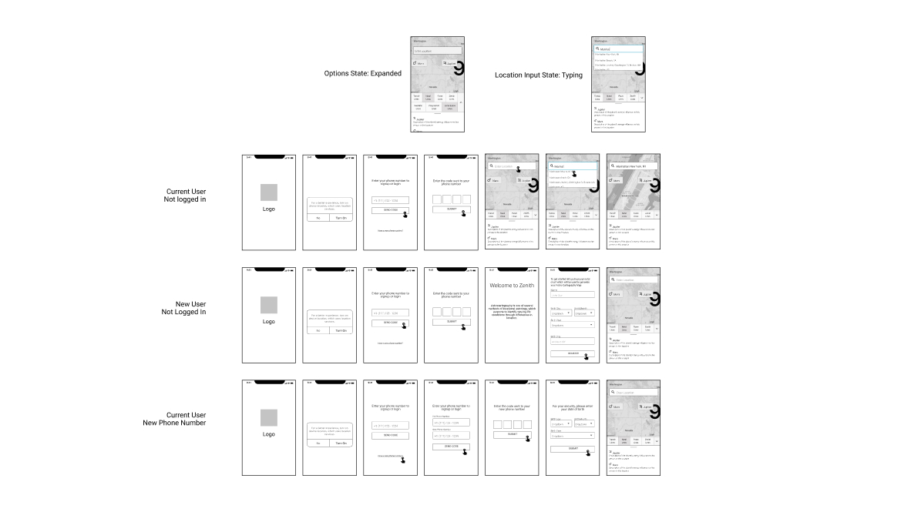
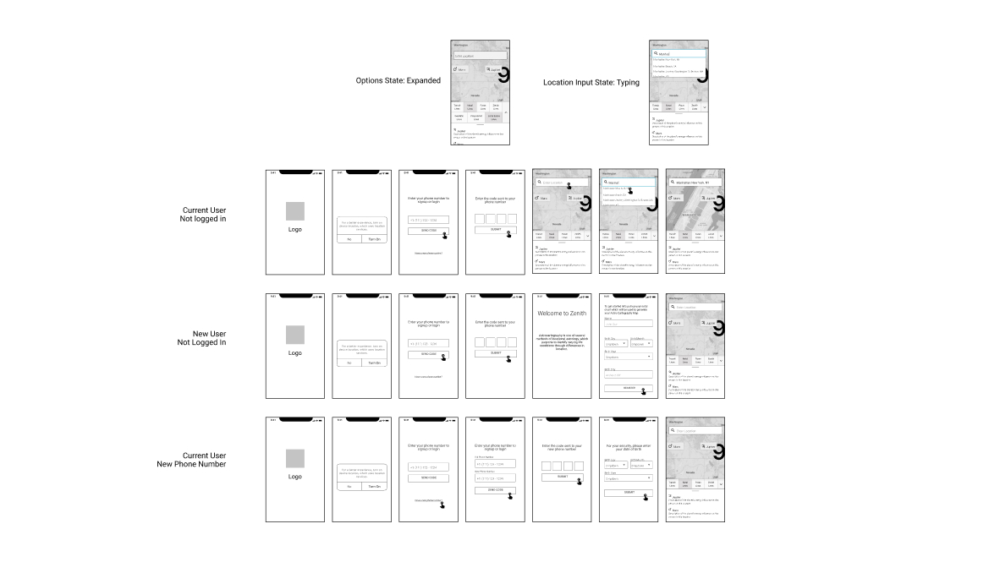

Role
UX Designer

After reaching out to Practitioners through Maren Altman’s Modern Magic Discord Server and Astrology Reddit forums I was
able to gather 21 survey users and 5 interviews to help develop our first hi-fi prototype.
Due to there being no existing AstroCartoGraphy mobile app I needed to understand how practitioners are using the existing tools and what
issues they have with what exists today and what improvements they desire moving forward. 100% of surveyors used iOS
mobile devices. Also, the highest used astrology tool is the website Astro.com and the Astrogold mobile app for ios.
After reaching out to Practitioners through Maren Altman’s Modern Magic Discord Server and Astrology Reddit forums I was able to gather 21 survey users and 5 interviews to help develop our first hi-fi prototype. Due to there being no existing AstroCartoGraphy mobile app I needed to understand how practitioners are using the existing tools and what issues they have with what exists today and what improvements they desire moving forward. 100% of surveyors used iOS mobile devices. Also, the highest used astrology tool is the website Astro.com and the Astrogold mobile app for ios.
 



Starting this project I knew it would have its challenges as it's the first of its kind. But to my surprise, it helped me as a practitioner to connect deeper into the astrology community online and also to discover the potential this concept has as many practitioners around the world desire an app like this. Noting that AstroCartoGraphy as a method was developed fairly recent (1940s) by Astrologer Jim Lewis. I discovered that simplifying the A*C*G map was a must as during user interviews a reported pain has consistently been astro.com's A*C*G map is incredibly difficult to read. So instead of throwing a bunch of information out at the user I designed buttons to toggle planetary lines to make it easier to discern. After we develop the map, we aim to incorporate 3rd party lifestyle app (LinkedIn, airbnb, tinder, etc.) integration to suggest things based off planetary line the user selects which could expand the apps demographic outside of practitioners & professionals.